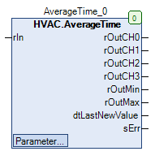

AverageTime (FB)¶
FUNCTION_BLOCK AverageTime
Short Description¶
Averaging of an analog value over four different time periodsAveraging: Arithmetic mean valueTypical application: Averaging over time of the outside temperature
Portrayal¶

Interfaces¶
Inputs¶
Name Datatyp
Range
Initial value
Function
rIn REAL analog input
Output¶
Name Datatyp
Range
Initial value
Function
rOutCH0 REAL Average value for time period 1
rOutCH1 REAL Average value for time period 2
rOutCH2 REAL Average value for time period 3
rOutCH3 REAL Average value for time period 4
rOutMin REAL Minimum value of all measured values
rOutMax REAL Maximum value of all measured values
dtLastNewValue DATE_AND_TIME Save time of the last measured value
sErr STRING Current error text
Setpoints / Parameter¶
Name Datatyp
Range
Initial value
Function
xCalculation BOOL TRUE Enable / disable data recording
xResetOnInput BOOL FALSE Initialization of the measured value storage and the average value outputs with rIn.
rInitValue REAL 10 Initialization value for the measured value storage and the average value outputs with eInitial = eInit2. InitValue
tInitDelay TIME 10s Delay time for the measured value storage with eInitial = eInit2.InputValueDelayed
eInitial eInit2 eInit2.LastValue Definition of the type of initialization
wCH3Time WORD 72 Definition of the time period 4
wCH2Time WORD 48 Definition of the time period 3
wCH1Time WORD 1 36 Definition of the time period 2
wCH0Time WORD 12 Definition of the time period 1
eTimeBaseCh0to3 eTime eTime.Hour Determination of the time unit for the periods
wInterval WORD 30 Setting the recording interval
rTimeBaseInterval eTime eTime.Minute Defining the time unit for the recording interval
Functional Description¶
General¶
rOutCHX Average value outputs ( X = 0 ... 3 )¶
Minimum value output rOutMin¶
Maximum value output rOutMax¶
dtLastNewValue time stamp¶
sErr error text¶
Type of initialization eInitial¶
Type
Value of the Initialization
Note
eInit2.InitValue rInitValue Configurable initial value
eInit2.InputValue rIn input value
eInit2.InputValueDelayed rIn Delayed input value
eInit2.LastValue Average - measured value storage (measured value storage filled)
Last Value
eInit2.LastValue rIn (measured value storage empty)
input value
Enable / disable data recording xCalculation¶
Resetting the measured value storage / the average value outputs xResetOnInput¶
Visualization¶
Codesys¶
- InOut:
Scope Name Type Initial Comment Input rIn REAL analog input
xCalculation BOOL TRUE Enable / disable data recording
xResetOnInput BOOL FALSE Initialization of the measured value storage and the average value outputs with rIn.
rInitValue REAL 10 Initialization value for the measured value memory and the average value outputs with eInit2 = eInit2. InitValue.
tInitDelay TIME TIME#10s0ms Delay time for measured value storage with eInit2 = eInit2. InputValueDelayed.
eInitial eInit2 eInit2.LastValue Definition of the type of initialization
wCH3Time WORD 72 Definition of the time period 4
wCH2Time WORD 48 Definition of the time period 3
wCH1Time WORD 36 Definition of the time period 2
wCH0Time WORD 24 Definition of the time period 1
eTimeBaseCh0to3 eTime eTime.Hour Determination of the time unit for the periods
wInterval WORD 30 Setting the recording interval
eTimeBaseInterval eTime eTime.Minute Defining the time unit for the recording interval
Output rOutCH0 REAL Average value for time period 1
rOutCH1 REAL Average value for time period 2
rOutCH2 REAL Average value for time period 3
rOutCH3 REAL Average value for time period 4
rOutMin REAL Minimum value of all measured values
rOutMax REAL Maximum value of all measured values
dtLastNewValue DT Save time of the last measured value
sErr STRING Current error text